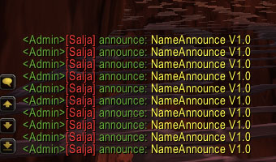

Description: a small patch for nameannounce in chat.
NOTE: you need gm rank 1,2 or 3
How to add: safe all as "nameannounce.patch" file add with git bash "patch -p1 > nameannounce.patch" insert the "nameannounce_mangos.sql" into your world database than compile and have fun.